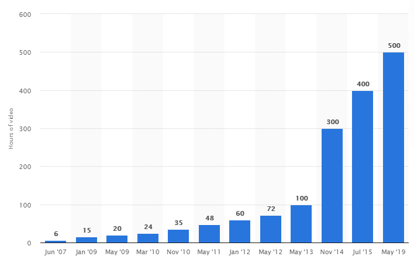
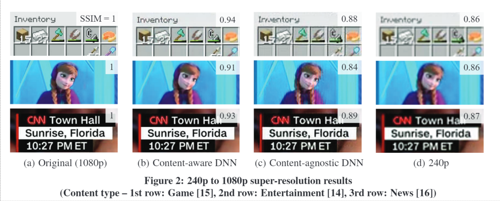
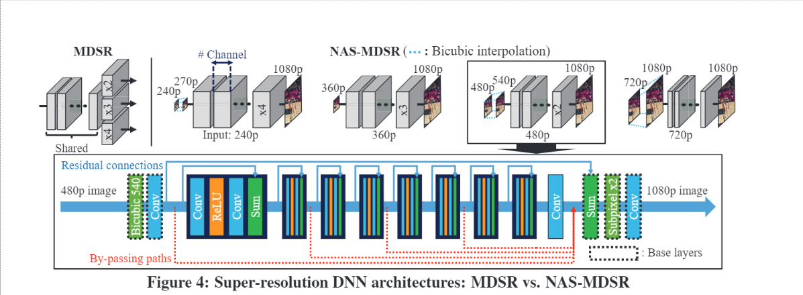

Introduction
Le streaming vidéo sur Internet (diffusion en continue d'une vidéo) a connu une croissance très importante depuis les dernières années, et représente une quantité d'information colossale.
Nombre d’heures de vidéos uploadées par minute sur Youtube (2007-2019)
Pourquoi utiliser le Deep Learning?
Le Deep Learning est l'utilisation de méthodes d'apprentissage automatique comme les réseaux de neurones profonds afin de tenter d'apprendre à un niveau d'abstraction élevé des données et en extraire des informations. Le Deep Learning est très bien adapté à des données visuelles, comme des images ou des vidéos (plusieures avancées dans le domaine de la vision par ordinateur peuvent maintenant permettre de reconnaitre en temps réel sur un flux vidéo des objets). Cette synthèse de veille a pour but de montrer comment l'utilisation des méthodes de Deep Learning peuvent permettre une amélioration du streaming de vidéo sur Internet.
De quel type de streaming de vidéo parlons-nous?
2 types majeurs de streaming de vidéos se distinguent:
- Les Vidéos à la Demande / VoD (Youtube, Dailymotion, Netflix etc...)
- Le Live streaming (Twitch, Mixer etc...)
Le Live streaming présente plus de contraintes que les VoD, du fait de la diffusion en direct de la vidéo. Certaines améliorations détaillés dans cette veille sont uniquement applicables aux VoD, alors que certaines utilisent les particularités du Live streaming pour tirer encore plus d'informations (en particulier en se servant du chat en direct).
Améliorer la QoE du visionnage de la vidéo
Qu'est ce que la QoE?
La 'Quality Of Experience' (QoE) est une mesure de la qualité de l'experience fournie par le service. Dans le contexte du streaming de vidéo, elle est synnonyme de confort de visionnage (Bonne résolution, bon bitrate, peu ou pas de buffering etc...).
Comment le Deep Learning peut permettre d'améliorer la QoE?
La QoE lors du streaming de vidéo est grandement dépendante de la bande passante disponible du client (une mauvaise ou instable bande passante génère plus de buffering et induit une résolution d'image plus faible). La QoE varie donc beaucoup selon la qualité de la connexion Internet du client. La très grande majorité du streaming de vidéo est faite à partir d’un PC ou d’un smartphone du côté client, lesquels disposent de capacités de calculs non utilisées lors du visionnage de la vidéo. Il est donc possible d'utiliser la puissance de calcul coté client afin d'améliorer la qualité de l'expérience (principalement en améliorant la résolution).
Réseaux de neurones de super-résolution 'Content-aware'
Un réseau de neurones de super-résolution crée une image de haute-résolution à partir d'une image source de basse-résolution. Ces réseaux sont entrainés à partir de base de données d'images de basse et hautes-résolution. Dans le contexte de VoD, l'entrainement peut être fait de manière plus spécifique: Pour une vidéo donnée, le réseau est entrainé uniquement sur les images de la vidéo. Le but est d'utiliser le phénomène d'overfitting, normalement néfaste, afin d'augmenter l'efficacité du réseau. Cela signifie cependant qu'un réseau unique doit être entrainé pour chaque vidéo de la plateforme, ce qui représente un coût de calcul et de stockage non négligeable. Ci-dessous un exemple d'utilisation d'un réseau de super-résolution transformant l'image source (d) en une image de résolution supérieure (c) ou (b), respectivement sans et avec overfitting.
Réseau de neurones 'scalable'
L'environnement de visionnage d'une vidéo est très hétérogène parmis les clients, ce qui est également le cas de la puissance de calcul disponible. L'inférence de l'image de haute-résolution doit se faire plus rapidement que la fréquence d'image de la vidéo (30/60Hz habituellement). Si la solution n'utilisait qu'un réseau fixe par vidéo, la puissance de calcul requise serais fixe également, ce qui soit sous-utilise les ressources disponibles, soit ne satisfait pas la contrainte d'inférence en temps réel.
C'est pourquoi le réseau doit s'adapter à la puissance de calcul disponible grâce à une structure 'scalable': le réseau est entrainé de telle manière qu'il fonctionne même certaines couches manquantes ('by-passed'). On peut ainsi à la fois créer un réseau plus simple (et ainsi plus rapide) pour des système à puissance de calcul limité, et également commencer à utiliser le réseau même si l'intégralité des poids n'ont pas été téléchargés (le réseau peut continuer d'être télécharger pendant la lecture de la vidéo).
Implémentation en conjonction avec l'ABR
L'Adaptative Bitrate est une technique visant à adapter le bitrate (résolution) de la vidéo en fonction de la bande passante disponible dans le but d'éviter du buffering tout en ayant la qualité la plus grande possible. Cette technique est souvent implémentée par un algorithme d'apprentissage par renforcement (comme par exemple sur Youtube). Pour notre solution, l'algorithme d'apprentissage par renforcement doit maintenant gérer le téléchargement des poids du réseau en plus du choix du bitrate du prochain segment vidéo à télécharger.
Structure de la solution
Le fonctionnement de la solution peut être synthétisé comme suit:
Lorsqu'une vidéo est uploadée sur la plateforme
- La vidéo est encodée dans plusieurs bitrates et séparée en différents 'chunks' (comportement basique)
- Plusieurs réseaux profonds 'content-aware' sont entraînés pour la vidéo pour l'amélioration coté client (les poids initiaux correspondent déjà à un état entraîné général pour facilité l'apprentissage)
- Un fichier manifeste pour la vidéo est créé, détaillant la structure des réseaux entraînés et l'adresse des fichier de poids de chaque réseaux
Lors de la lecture d'une vidéo
- Le fichier manifeste est téléchargé
- Le client détermine le réseau adapté à sa puissance de calcul (test à partir de poids nuls pour tester le temps d'inférence)
- L'ABR décide ensuite à chaque étape si des couches de réseaux sont téléchargés, ou des segments vidéo (dépends de la bande passante, de la taille du buffer etc...)
- Quand un segment vidéo est téléchargé, il est placé dans le buffer et est passé dans le réseau de super-résolution et utilise le nombre maximum de couche permettent une inférence en temps réel
- Une fois l'inférence du segment vidéo terminé, le nouveau segment remplace l'ancien dans le buffer
Adaptation à un contexte de Live streaming
Cette méthode d'amélioration de la QoE nécessite d'entraîner le réseau au préalable sur la vidéo, chose impossible dans le contexte du Live streaming. Même s'il est toujours possible d'utiliser un réseau général de super-résolution dans ce cas, une solution plus intélligente et adaptée au Live streaming est possible:
Dans la plupart des utilisations de Live-streaming, la diffusion est catégorisée selon son contenu (le jeu vidéo diffusé par exemple). Il est donc possible d'entraîner un réseau "Content-aware" sur le sujet de la diffusion en direct. Cependant les performances seront moins intéressantes que dans le cas des VoDs.
Evaluer la QoE de la diffusion
Intérêt et contraintes de l'évaluation de la QoE
Savoir évaluer la QoE de la diffusion en temps réel est très important dans plusieurs situations, comme par exemple dans la solution précédente où cette évaluation est nécessaire dans l'algorithme d'Adaptative Bitrate (ABR), ou encore pour réagir en temps réel auprès de l'utilisateur (notification du problème et conseil pour améliorer la situation: proposition d'activer l'ABR si désactivé par exemple).
Cependant, cette estimation est complexe et chronophage, ce qui empêche toute mesure précise de la QoE en temps réel. Le but ici est d'utiliser le deep learning non supervisé afin d'obtenir une solution rapide et polyvalente à différents types de vidéo.
Machine de Boltzmann Restreinte (RBM) et apprentissage non-supervisé
L'apprentissage non-supervisé permet d'inférer une structure dans des données non labélisées. Une Machine de Boltzmann restreinte est un type de réseau d'apprentissage non-supervisé, adapté à l'estimation de densité et permet d'apprendre la distribution de probabilité de ses inputs.
L'apprentissage a pour objectif ici de minimiser l'erreur entre les inputs et les inputs reconstruits.
Ainsi, quand le réseau rencontre des inputs ne faisant pas partie de la distribution apprise lors de la phase d'apprentissage, l'erreur entre les iputs et les inputs reconstruits augmente.
La dégradation de la vidéo peut donc être estimée par l'erreur entre les inputs de la vidéo coté client et ces mêmes inputs reconstruits à partir du réseau entrainé sur la vidéo originale.
Principe de la méthode
Les inputs associés à une séquence vidéos sont des features corrélées à la QoE:
- Le bitrate
- Le nombre de frames reçues
- La complexité de la scène ainsi que le mouvement, empiriquement extrait de l'encodage
- La pixelisation
- Le ratio de bruit
- Le flou moyen
- L'intensité du mouvement (au niveau du pixel)
Ces features ont été choisies car elles sont récupérables en temps réel et présentent une corrélation élevée avec la qualité de la vidéo.
La méthode fonctionne donc de la manière suivante:
- Le modèle RBM est entrainé avec les vidéos disponibles sur la plateforme
- Quand le client ouvre une session, il télécharge le modèle
- Une fois que le streaming commence, le client extrait en direct les 8 features mentionnées précedemment
- Quand la séquence vidéo (2-10 secondes) est terminée, ces features sont moyennées, insérées dans le modèle RMB, et ainsi reconstruites
- L'erreur RMSE entre les features et leur versions reconstruites donne une estimation de la dégradation de la vidéo
Cette méthode donne une corrélation entre 78 et 91% avec la méthode VQM (Video Quality Metric), qui est une métrique adaptée à la vision humaine.
Génération automatique de temps forts
Contexte
Un avantage que le Live streaming a comparé aux VoDs est la présence d'un chat instantané permettant d'obtenir la réaction du public lors d'une diffusion en direct.